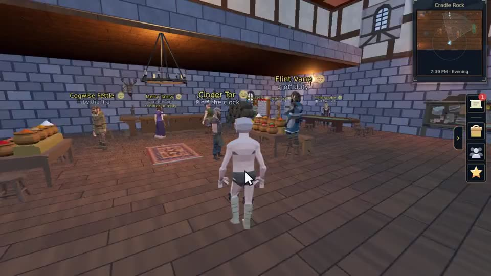
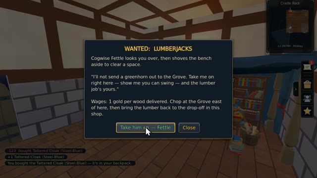
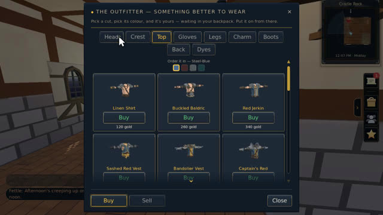

They remember. They gossip. They say no.


-
Ask Bralo what the word is tonight
He tells you about the room you are both standing in: who just won at the gem table, who is hiring at the forge, who has been spinning tall tales by the fire all evening.
-
Win at the gym, and the tavern already knows
Beat someone in a friendly bout at the Cradle Gym and by the time you walk into the inn the whole cast has heard. Lose, and that goes round too.
-
Ask anyone to walk with you
They weigh how much they like you, whether they are busy, and how far off you are. Then they fall in beside you, or tell you no and why.
Conversations need a live internet connection. Everything else in the game plays offline.
Earn your passage
You arrive on Cradle Rock as nobody. Take jobs that are each their own mini-game, play the inn's tables, climb the five-rung gym ladder, then face the beasts of the Labyrinth one at a time. The demo ends the day you buy your way off the island.

Six mini-games
Poker, Coin Drop, Skirmish, Mining, Lumberjacking, Dish Duty. Every job on the island is its own game.
The Cradle Gym ladder
Five friendly bouts, easiest first. Beat them all and you are Gym Champion.
The Labyrinth Ordeal
Five beasts, one at a time, up to the Labyrinth King. Lose, and you wake at the gym with the healer.
Create your hero
23 faces, 38 haircuts, 18 beards. Start in plain clothes and buy the rest.
One currency, earned
Gold only. It never decays, and you cannot buy it.
Hearties and rivals
Rapport runs from Despised to Confidant. Earn it and they act like it, in what they say and what they will do for you.
{kind=link}
{kind=link}
{kind=link}
{kind=link}
{kind=link}
{kind=link}
{kind=link}
{kind=link}
{kind=link}
The roadmap, plainly
-
In the demo
Cradle Rock
One island, fully dressed. Six jobs and tables to play, a cast who keep their own schedules and remember you, the gym ladder, and the Labyrinth Ordeal at the end of it. Earn your passage and the demo closes at the sky dock.
-
Built, not in the demo
The ship and the voyage
Buying a hull, taking a crew aboard and sailing out. The duty stations that keep a ship flying are written and tested: bilging, sailmaking and the sailing itself. Cut from this build, not missing from the game.
-
Planned
More to play
Six jobs and tables is where it starts, not where it stops. More work to take on, more games on the tavern tables, and some that belong to one island and nowhere else. New ones keep coming rather than arriving once.
-
Planned
A sky full of islands
Driftspar first, with its own cast and its own tables. Then a whole chart of them, each one built by hand and scattered across the sky, sitting at their own heights. How far your ship can carry you is what opens the map up.
-
Planned
Playing together
Drop-in co-op for a few friends, one session at a time. It will never be an MMO.
No dates on purpose. Art and audio are placeholder for now.
Quick answers
Is Shivaliva Shanty free?
Yes. It is free on itch.io for Windows, name your own price, no sign-up.
What kind of game is it?
A single-player puzzle-skill adventure among floating sky-islands. The six mini-games are the island's jobs and the tavern's tables: Poker, Coin Drop, Skirmish, Mining, Lumberjacking and Dish Duty.
Is it a Puzzle Pirates successor?
It is made in that spirit: jobs that are puzzles, a sky instead of a sea, and a crew to come. It is one person's own game and is not affiliated with Three Rings.
Do I need an internet connection?
Only for conversations with the islanders. Everything else in the game plays offline.
Is it multiplayer?
Not yet. The demo is single-player. Online co-op with a few friends is planned, never an MMO.
Who makes it?
Trojan Bulldog, one person, building in public in Godot 4.7. The devlog is on itch and updates are posted on X as @trojanatoplat.
Free on itch, for Windows
Name your own price on itch.
Trojan Bulldog. One person, building in public in Godot 4.7.